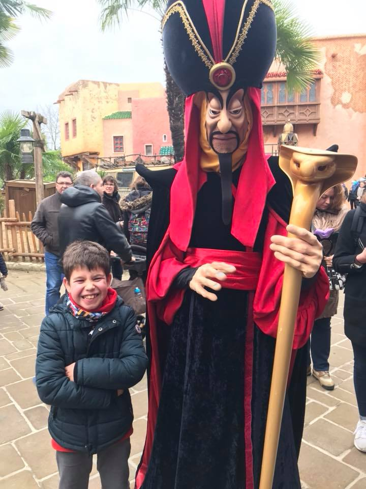

Op een winter in het derde leerjaar hadden mijn oma en opa een ticket voor mij gekocht en zijn we op een random schoolweek met de mobilhome naar DisneyLand Parijs vertrokken. Mijn ouders hadden mij ziekgemeld en gezegd dat ik de griep had. Dus wij zitten daar in DisneyLand en het was niet druk omdat het eigenlijk school was.
Ik en mijn oma en opa zijn op attracties aan het gaan en op restaurant terwijl mijn klasgenoten op school zitten dictee's te maken. Op den duur had mijn oma een hele domme move gedaan.
Ze had een foto op haar FaceBook gezet maar 1 van mijn leerkrachten is daar mee bevriend en had dat dus gezien.
Toen ik terug op school kwam moest ik op gesprek bij de directie en als straf mocht ik een week elke dag in de studie zitten en als straf had ik geen kleine pauzes als 'compensatie' dat ik een lesweek geskipt had.

Noah Decoster
School skippen voor een week om naar DisneyLand Parijs te gaan.
